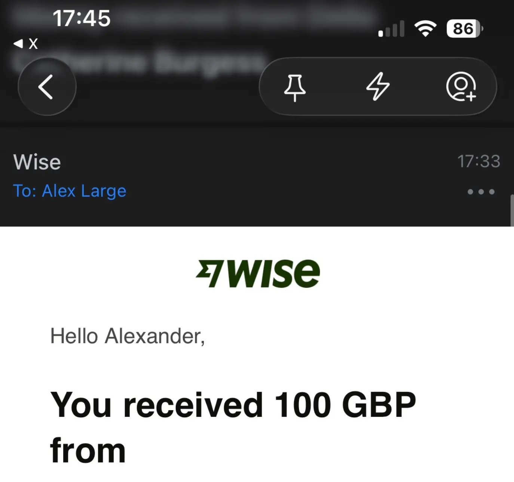

- As of literally 15 mins ago at time of writing, I am now a professional coach!

- (Meaning, I have just been paid for the first time ever)
- And, unrelated to my getting paid for the first time, but an interesting ~synchronicity → today I had a call with a coaching “client acquisition specialist”
Excursus on my coaching history
Dabbled
- I’ve dabbled in free coaching occasionally over the past ~2 years but never quite had the personal alignment to focus on it and make it a thing
Co-thinking
- Recently I launched my experimental “co-thinking” offering after doing it for 2 weeks with Ediya and having it go really well
Momentum coaching
- I had two concurrent clients do a kick-off sprint week with me, which led to a new shape:
- Free initial week, with 3 calls, to map problem space
- £100/week for an hour-long call + website to track progress
- This led to pivoting from “co-thinking” to “Momentum Coaching”, with the thought of “well, the output is momentum”, not thinking
- https://getmomentum.site/
Where I’m currently at
- So, I’m currently pricing at £100/week, and I currently have two paying clients (the second client has finished their free week and will pay in ~7 days once they’re back from holiday)
- So, first of all, huge, awesome, validation that I have product/market fit, at least in this specific shape
The issues
1 hour a week != momentum
- In the pivot to “free week & then a weekly call”, I’ve lost the initial shape that I did with Ediya, which was actually a daily 1-hour call to get a bunch of momentum and start shipping things, with time spend in between the calls too
- It’s true that after 3 hours of initial calls and then the weekly call, we’re discovering key things to action and dissolving emotional blockers, but it still feels like a big slow-down IMO
Less motivated as a result
- It feels like what I’m delivering is harder to be excited about now. It’s like I’m now a weekly accountability coach, which is fine, but feels low-skill and low excitement
- Useful signal: I want to feel the momentum with the client. I don’t want to be just talking to them for 1 hour a week
Client acquisition
- So far I’ve just sent this out to my friends and small twitter following (and I imagine the algorithm doesn’t like me because I don’t tweet very much anymore)
- This is part of what led to the pivot away from a more expensive sprint week/fortnight, as normal people who don’t have businesses/clear levers to pull to generate more wealth, find it harder to justify spending say 500 is high, or something (I’m still not well versed in the terminology)
Coaching style
- I really like the problem-agnostic, “I will help you think, help figure out your own blockers, help you find your own wisdom rather than prescribing my own formula” stuff
- However, I do think that this makes it harder to pitch. It’s very broad: “you’re probably stuck in some ways, I will help you get unstuck in those ways, idk what they are yet though”. This is true and honest and non-icky, but I can also imagine it landing as far too vague. Better to be hit with “I bet you’re stuck in this specific way, and I can help!”, right? That’s the received wisdom anyway
In comes this guy
- Claims are pretty legit:
- Make a more compelling offer
- Niche down, have a clear heaven-vs-hell, have a clear target audience
- Risk reversal too → “money back guarantee” or even “2x your money back”
- Get it in front of more people
- Ads, basically. Spend £20/day
What’s stopping me from being a “hell yes”?
He said some icky things on the call
- Cookie cutter replies to my questions
- E.g., in response to the fact that I don’t have a niche yet and that seems like a legitimate concern (because like, his “best case” clients that he shows off were already e.g. in fitness or whatever), he was like “when you get out of your comfort zone, your brain tells you it’s not safe, the brain is wired for safety”, something like that1
- Similarly, he wanted me to pay the deposit on the call, at the end. On the one hand, I can see how this creates momentum, on the other, it feels coercive. Like a skillful used car salesman. And he sent over the stripe link, and then I was like “hang on, do you have any legal paperwork?”, and then he sent that over, and still wanted me to pay on the call2
- Similarly, clearly scarcity-based marketing tactics, like acting as if you’ve gotta hit “confirm” on the calendar link ASAP so he doesn’t get double-booked (vs when I booked, I could see that he had a bunch of availability)
- So I guess this cashes out to like, do I have to become a ~dishonest grifter in order for this to work? This cashes out to my main concern:
Total money back if I do everything he says and still don’t get results
- But, what if what he tells me to do clashes with my philosophy
- E.g., how much coercive marketing/sales tactics are involved here?
- And like, how much do I have to change my own online brand?
- What icky things do I fear? 👇
Coercive sales tactics
- (And admittedly, yes he sent me the Stripe link on the call, but he didn’t insist further)
- This cashes out to: “can I be honest, up-front, transparent, myself”
Cringe-y positioning
- I don’t want to make a cringe, sales-bro-y Twitter account, for example. I don’t want to trash my (tiny, but very sincere) online brand. I don’t want to lose my online personality. I don’t want to act out of alignment, to be insincere
- This cashes out to: “can I remain myself”
All about $, nothing about value delivered
- “We tripled this guy’s monthly coaching income”, main red flag here is:
- Did the guy get more like, “accounts payable” money, more commitments for payment, due to coercive sales tactics, but have clients with short lifetime value?
- Like, it doesn’t seem to be about helping people be better coaches, get better results
- I’m pretty much brand new, so currently I literally don’t know if I can get the results I claim I can.
Do I need better client acquisition, or do I need to become a better coach?
- I guess both
- Today I had a coaching call and my client said one thing I said was a “groundbreaking insight”
- I guess in the “people pay for how you make them feel” thing, where value is never something someone can directly point to
- So, if I’m currently charging that client £100/week, is there someone who would pay 3x that, for the same amount of skill on my end, but it feels worth £300/week to them because a) they have more money or b) they’re doing more as a result of the bigger incentive to act, on their end? Seems plausible for sure. And then, if I have 10 people like that, that’s ~£13,500/month
- So that cashes out to:
- Can I get 10 weekly clients?
- Can I find people who can afford to pay 3x more? 2x more? 1.5x more?
What could my niche be?
- So far I’ve helped people at around my power/influence/wealth level, and as such, they haven’t had problems where it’s clearly worth £300/week to them
- What concrete problem could I solve for people?
- Already done the “youtuber brand philosophy” stuff
- But like e.g., if a big niche is habit change → I don’t have any successful clients for that yet. (I guess then, you could price yourself lower, and do the money-back guarantee thing)
What if I stayed charging the same amount?
- I know I can charge £100/week, I’m literally already doing it
- What if I got up to 10 clients a week instead of 2
- That’s £4.5k/month, boom, ~easy
Cost
- $7.8k, which honestly isn’t too bad IMO
- 2.9k, then $2.9k
- 6 months long engagement
- With my conservative “£100/week x 10 clients” thing, I’d make £4.5k/month, $6k/month, which would pay for this entire thing pretty quickly
- Even if I ended up only breaking even (somehow), I think I’d still learn a bunch. Can treat it as an experiment. “How does it feel to have 10 clients/week?”
Looking at the contract
-
Picking out highlights/things of note
-
6 months access, confirmed
-
Access to [main guy] via Telegram → what about calls?
-
Access to proven templates, scripts & processes → ooh, this is where it feels icky, scripts != my own voice
-
You are entitled to a refund and $5000 compensation provided you meet all ten of the following terms of eligibility and completion:
- A. Your business has made less than an additional $10,000 revenue in a 31 day period over your monthly average revenue (calculated based on last 3 months of business revenue)
- B. 180 days have elapsed since you registered for the Program
- C. You reply to all communication from the Program within 48 hours
- D. All payments are made on time, without delay
- E. Conduct every sales call with approved sales process by [dude] (all calls to be recorded & tracked)
- Ooh, this one is especially gross!
- F. Create an offer in accordance with our training (must be audited by Acquisition Pilot)
- G. Social media branding is crafted in accordance with our training
- Ooh, yes, this is also very gross!
- H. Send/Make at least 900 activation messages per week to your niche OR spend a minimum of $30/day on paid ads according to our process (Acquisition Pilot will provide proven structures, scripts & automations for ALL systems).
- ** Accurate data tracking must be logged
- ** Starting a maximum of 2 weeks after joining (2 weeks to get everything set-up)
- ** All DM conversations process to be audited by [dude] (with accurate daily data tracking)
- I. 6x SPEAR campaigns and 24x Hand Raiser posts are completed according to our process
- I don't know what these are
- J. Send your updated P&L sheet 1x per month and send your weekly metric report 1x per week in the VIP telegram chat
-
Yeah, so reading this definitely has me feeling more grossed out that he was trying to get me to sign up for this without even sending me these terms. Literally, “here’s the signup link, pay now!”, and me being like “hang on, is there any paperwork?”
-
You may not record, use or reproduce any material in the Program without written permission of the owner. You understand all communication in the Program may be recorded and may be used for promotional purposes. You authorize us to use your voice, materials, name, photos, screenshots, results or likeness in future promotional or other Program materials.
Ok, I think the contract answers it for me
- This is too icky
- I don’t want to agree to things that I don’t yet understand, on pain of forfeiting all my money if I change my mind of find myself unaligned
What has this process given me?
- I do want momentum, accountability (and note that that is what my offering is, lol. I want a me)
- I could pay Visa $600 for an hour of marketing consulting, giving money to a high-trust person